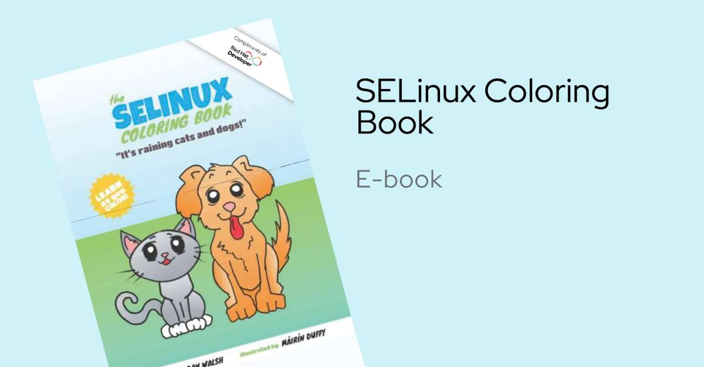
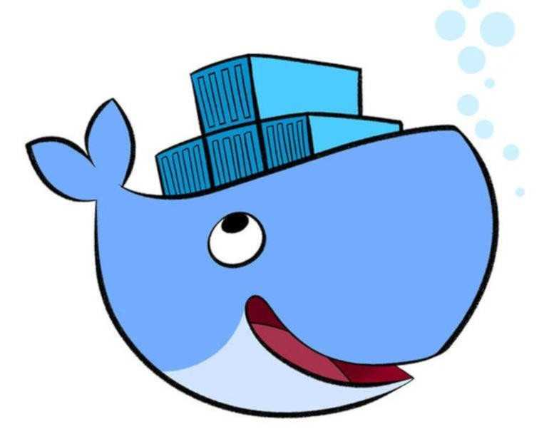
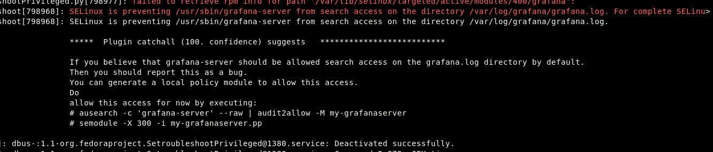
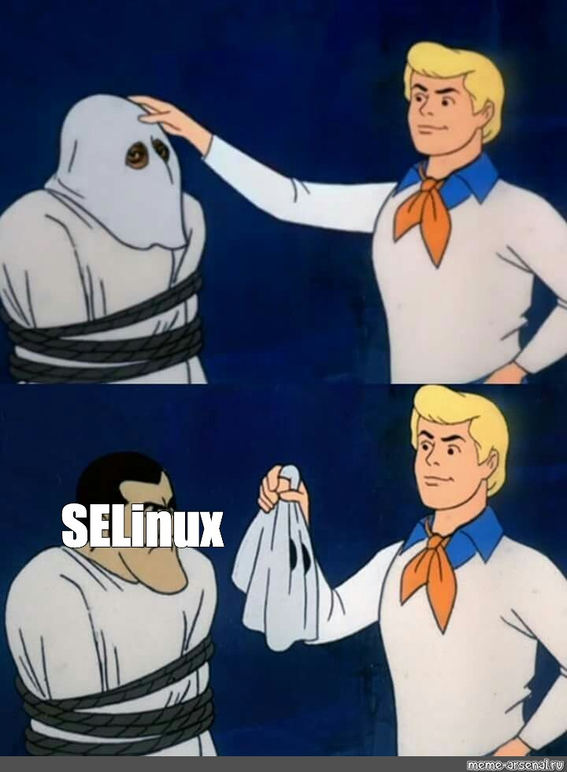

Selinux suprises
When it comes to SELinux, many of us initially find it to be quite a hassle. In fact, I had to change the topic of this article because my original plan was to discuss how to create your own control center using Grafana, Prometheus, and Golang. However, once I started deploying containers, everything took a turn for the worse…
Before We Begin

To follow along with this tutorial, you’ll need to download a special Red Hat instruction.
If you think you are so smart that you won’t need it, I’ll say you will miss a lot. But for those who won’t believe, I leave this…
Het_Tanis once mentioned on stream that:
“They disabled SELinux, and the next day, when the Red Hat team discovered this, they found those colorful mannuals left on the table.”
So we got Mods
So before we dive deep into containers we have to do a little warm up about SELinux itself.
First, we need to decide which mode we want to run SELinux in.
There are three states of SELinux:
- Permissive
- Enforcing
- Disabled
To check the current status, use the command sestatus.
We can skip the “Disabled” because none of us wants to receive a copy of the coloring book handed to us in front of our boss!
This leaves us with two options: - we can either conform to the Red Hat specifications - or take the permissive route.
Typically, people recommend using permissive mode in two scenarios:
- When you want to check if the service you are using works on its own and deal with SELinux later.
- You know what you are doing.
However, a lack of SELinux enforcement may be flagged as a security concern by your security team.
So, why would you leave it unattached?
The reality is that often you don’t need full protection, sometimes you just want a safety net.
What you can do is set up alerts in your logging manager on a remote system so that if something goes wrong, it can handle it or deal with it later.
However, this should not be done on production systems!!!
I will show you this in my future post so stay tuned for that!
Understanding SELinux Labels
In SELinux, file labeling is crucial and follows this format:
user:role:type:level
Unless you work for a governmental institution, you can skip user, level, and role, and default to unconfined.
This is primarily relevant for Multi-Level Security (MLS).
To view the SELinux context of files, you can use the following command:
All you have to remeber is the first part of the context, such as
httpd_t, it indicates which components can interact with each other.
For instance, httpd_t can interact with all httpd components but
cannot interact with ssh_t.
Even if you set file permissions to 777, SELinux will still enforce
its policies and block access.
Another interesting aspect of SELinux is that the context is stored in memory during startup. If you check the output of the command:
You will see that even running processes maintain their SELinux context. The same principle applies to network ports. By using the command:
You can view the associated contexts for network connections.
Typically, different services are linked to default ports. For example, if you want to enable SSH to listen on port 6969, you would need to execute the following command:
Where This All Is Defined and How to Be Lazy
There are a lot of apps that work similarly to each other, so if you ever worried about the policy or the context, look them up and basically copy it.
The contexts are stored in
/etc/selinux/targeted/contexts/files/file_contexts.
There are almost 7000 default contexts inside it (6658 on my system). To set one, you have to first point SELinux to what the context should be:
As I mentioned, this won’t change the context immediately. Since you set it as default, you have to restore it with:
Labels when it comes to containers …

Finally, we made it to the shore
Typically, not many people discuss using containers with SELinux. And that’s a mistake.
Containers are superior due to the fact that they are isolated and do not interact with the host system as much. They are much easier to handle than, for example, writing custom policies.
Becouse of unique lables inside them.
However, there are some nuances that need to be covered.
You might think that Docker or Podman already handle SELinux and set up the proper labels, and you would be correct that the default type on the container is managed.
However, this does not apply to the volumes.
“If the content on the host system leaks into a container or a container process escapes, then SELinux blocks access.”
Unless you explicitly set the flag for the volume, SELinux will consider it an intrusion.
To resolve this, you need to add :Z at the end of the volume flag:
Uppercase :Z restricts access so that only one specific container can
access the volume. Lowercase :z allows other containers to use the
same volume.
This set’s the content to container_t but therse a catch it changes
the context for the dir.
What if u only want file as a volume?
Then u have to change the context of the file to container_file_t This
ussualy will resovle issues but we forgot about one small detail.
By default docker has access to
- /usr/var/
- /var/lib/docker
- /var/lib/containers
- most things in /etc.
So the /var/log might be problematic then u have to change the context
to svirt_sandbox_file_t
Here u have more info about it Docker SELinux Security Policy
Alternatively, you can try udica.
This tool will relabel the context to meet the requirements of the
containers, so you don’t have to allows every container to read
/var/log.
How to Even Track SELinux Issues

When people say SELinux is hard to debug, I think they forget about
journalctl.
The messages are quite extensive and usually point you to what to do in order to resolve the issues.
You just have to know where to look for them.
All SELinux messages can usually be spotted via journalctl by
searching for “SELinux”:
Alternatively, you can check what journalctl uses under the hood,
which is /var/log/messages.
Another way to find SELinux messages is if auditd is enabled:
Here is more info how to do it Troubelshootig Selinux Logs
It’s not as scary as it’s made out to be
So there you have it! SELinux might feel like a headache at first, especially with containers, but it’s really not that scary.
Once you get the hang of contexts, labels, and a few key commands, you’ll see it’s manageable.
Just remember to check your SELinux status, use journalctl for logs, and don’t forget about those volume flags when working with Docker.
With a little practice, you’ll be navigating SELinux like a pro.
